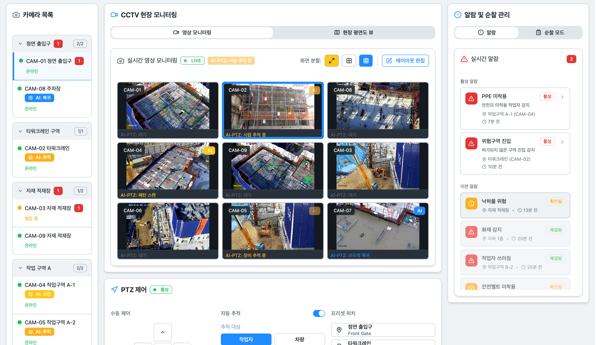
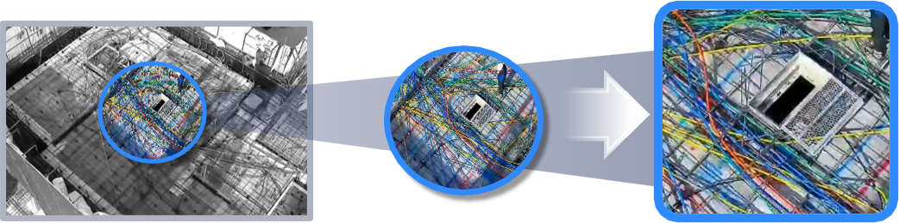

01
일일 위험 탐지 리포트
탐지 건수 · 유형 · 시간대별 패턴을 자동 정리한 일일 보고서.
- 탐지 건수·유형별 분류
- 조치 완료·미완료 현황
Products
기존 CCTV에 AI를 얹어, 사각지대까지 스스로 살피는
자율 관제 솔루션.
CCTV 자율관제
기존 CCTV에 AI를 더해 위험을 감지하고, PTZ 카메라가 스스로 움직여 사각지대를 커버합니다.

지능형 CCTV를 넘어
단순 이벤트 감지에 머무르던 지능형 CCTV를 넘어, 상황을 이해하고 스스로 행동하는 관제 시스템으로 진화합니다.

BEFORE
사람이 보는 CCTV
감지해도 규정·조치·기록은 사람이 별도로 정리해야 합니다.

AFTER · 온토비전
스스로 판단하는 CCTV
감지에서 법령 대조·조치 안내·자동 기록까지 한 흐름으로 이어집니다.
감지에서 조치까지 한 흐름으로 자동 처리합니다.
법령 연동 증빙 자료를 자동으로 생성합니다.
현장 맞춤형 교육 자료까지 한 번에 제공합니다.
핵심 기능

01

02
5대 감지 시나리오

03
위험 감지 시 카메라가 자동으로 회전 · 줌인하여, 사각지대 없이 추적하고 기록합니다.
핵심 특징
04
위험 상황을 관련 법령과 자동으로 대조하여, 위반 조항과 필요 조치를 즉시 안내합니다.
규정 매칭 실제 사례

05
핵심 기능
도입 프로세스
Step 01
기존 CCTV 인프라의 영상 스트림을 그대로 받아옵니다. 카메라 교체나 신규 장비 설치가 필요 없습니다.
Step 02
관리자가 화면을 지켜보지 않아도, AI가 24시간 5대 위험 시나리오를 자동 감지합니다. 사각지대는 PTZ 카메라가 스스로 추적해 감시 공백을 없앱니다.
Step 03
발생 즉시 관제 · 현장에 알림을 보내고, RAG-LLM이 법령 대조와 보고서 초안을 자동 생성합니다.
이렇게 남습니다
01
탐지 건수 · 유형 · 시간대별 패턴을 자동 정리한 일일 보고서.
02
실제 현장 영상과 관련 법령 조항을 조합한 맞춤형 교육 자료.
03
감지부터 조치까지 전 과정을 타임스탬프와 함께 기록해, 법적 분쟁 시 즉시 활용합니다.